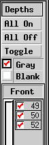

Layers (Depths)
Overview
Xfig uses depths
(a simple form of layers) to determine the drawing order of overlapping objects.
The depth is one of the attributes of an object, just as color is.
If you have two or more overlapping objects and the order in which they
are drawn is important you must give each a different depth value.
Depth 0 is the top of the drawing order, with increasing depths
being underneath objects with smaller depth. The maximum depth is 999.

While the depth feature has been a part of
xfig for a long time, there is now a panel to the right of the canvas
which allows the user to enable or disable editing and displaying
depth levels.
This panel may be hidden or shown by selecting Show depth manager
from the View menu.
Clicking on the checkbox area of a depth indicator will turn on or off
the display and editing of objects at that depth.
By clicking on one checkbox and holding down the mouse button while
dragging the mouse up or down over other depth checkboxes, multiple
depths may be enabled or disabled at one time.
If you click on a checkbox that is ON and drag the mouse over
other checkboxes, they will be turned OFF regardless
of their initial state. Conversely,
if you click on a checkbox that is OFF and drag the mouse over
other checkboxes, they will be turned ON.
 When exporting or printing your figure, you can tell xfig to export
or print the whole figure or just the active layers.
When exporting or printing your figure, you can tell xfig to export
or print the whole figure or just the active layers.
Controls
-
All On
-
Pressing this button will turn on all depths.
-
All Off
-
Pressing this button will turn off all depths.
-
Toggle
-
Pressing this button will toggle all depths, i.e. turn on all depths
that are off and turn off all depths that are on.
-
Gray
-
Turning on this checkbox will make xfig display layers that
that are off in gray.
-
Blank
-
Turning on this checkbox will make xfig not display layers that
that are off.
[ Contents |
Introduction |
Credits ]